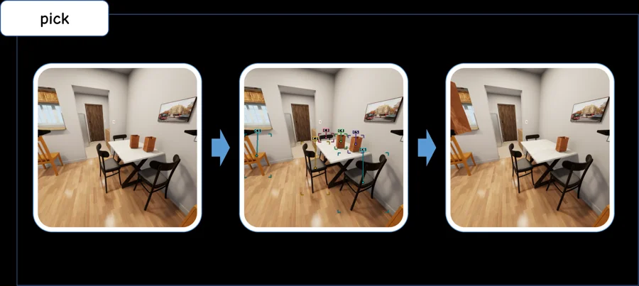
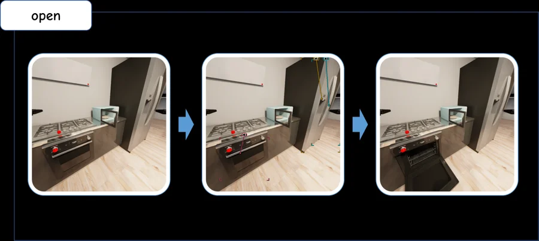
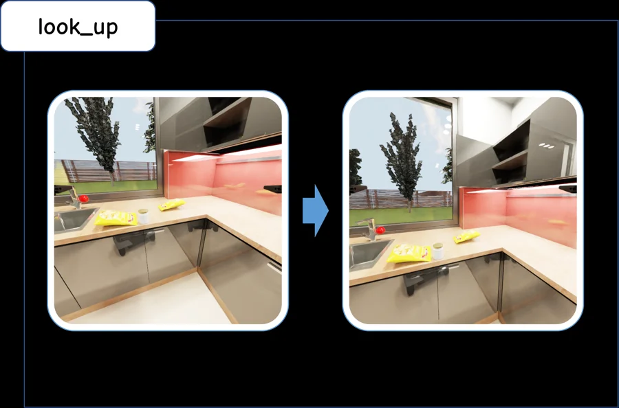

Acquire missing evidence
Actively obtain information needed for a subsequent decision.
Active information acquisitionBenchmarking Agentic Capabilities
in Interactive Embodied Tasks
A diagnostic lens on how embodied AI agents acquire evidence, retain history, verify outcomes, and reason about the physical world.
Household tasks test more than the final state. EmbodiedScope examines the decisions that make closed-loop execution possible.
Actively obtain information needed for a subsequent decision.
Active information acquisitionUse earlier task-relevant information when it is no longer directly visible.
MemoryVerify action outcomes and respond to execution failures.
Verification and recoveryReason about geometry, physical relations, and action consequences.
Physical reasoningBasic interactive household tasks
30 tasks for each of A, M, V, and P
Two or three capability demands within one episode
Compare the evaluated model–system configurations across task levels and capability dimensions.
Capability-level performance and execution efficiency, reproduced from the manuscript.
Original figure retained as supplied. The interactive plots below use the manuscript’s numerical tables.
All ten AI configurations · a shared 0–100% scale
Striped bars denote a native agent-system configuration. Human references are reported separately.
Success rate (%) · identical 0–100 color scale across all four columns
Success rate (%) · higher is better. Results transcribed from the supplied manuscript.
| Model / system | L0 | L1 · A | L1 · M | L1 · V | L1 · P | L2 |
|---|
Model-only and native agent-system configurations are shown separately. These results describe the evaluated configurations and protocol, rather than isolated model capability. Human (Avg.) averages three participants; Best-of-3 counts a task when at least one participant succeeds.
AI configurations only. Read action counts together with success; lower counts alone do not establish better performance.
Original trajectory figures from the supplied research materials. Select a capability and expand the figure to inspect individual actions.
A search-and-placement task makes the observation history and ensuing actions visible.
Static recorded trajectory · scroll to inspect
Three recorded GPT-6 Astra runs on a real tabletop setup. Each original figure preserves observations, selected targets, actions, and the displayed final state.
Task Identify the container holding two of {shrimp, pea pod, broccoli}, then place the missing item inside.
Sequential container inspection, followed by an upward viewpoint adjustment and placement of the missing shrimp.
Early identification of the target container, followed by two lateral viewpoint corrections and placement of the missing shrimp.
Sequential container inspection, followed by a lateral viewpoint adjustment and placement of the missing shrimp.
Each observation tile shows the frame before its action. Illustrative individual runs. These figures are not an aggregate real-robot benchmark score; “DONE” is an action in the recorded trace.
A shared intermediate action interface connects task-level reasoning to navigation and object interaction.

Pick and place objects while accounting for their spatial relations.

Open, close, and toggle to interact with the household environment.

Move, turn, and look to acquire information and reach the next action.
Read the paper on OpenReview. Code and dataset links will be added when available.